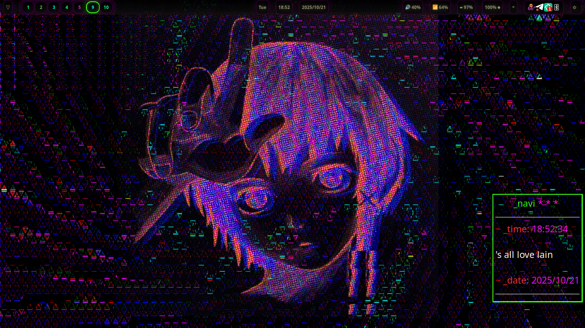
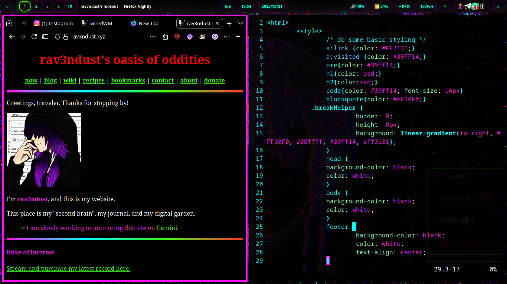

now | blog | wiki | recipes | bookmarks | contact | about | donate
* * * back home * * *
let's all love lain
wiredWM is our fork of sway, my favorite tiling window manager. I have added a bunch of customizations on top with our configs, a host of custom scripts, a myriad of helpful keyboard shortcuts, color themes matching our nightshadeNeon color scheme, and a suite of software both hand-picked and written (and/or forked) by us.
As you can probably tell from the images, wiredWM is heavily inspired by Serial Experiments Lain, my favorite anime of all time.
We have a bunch of handy keybindings that make everyday operations simple for the user. Here's a handy quickstart guide:
~ Please note that the Super key is the Windows key on most keyboards, and the command key on Apple keyboards.
dmenu to run commands..desktop files.rofi launcher to filter open windows, launch applications, and run commands.wired-lock, our wrapper around swaylock for this.grimshot to take a screenshot and copy it to your clipboard and save to the Screenshots folder.nemo.gsimplecal for this.learn, a special reference document that shows you all the keybindings used in wiredWM, along with other helpful information.You can also hold the Super key while (left)click-dragging on a window to re-organize its tiled position, or to drag it around the screen if it is floating. Doing the same while (right)click-dragging will allow you to manually resize it.
Here are some of the tools we utilize on wiredWM.
waybar, heavily customized with our theme, shows your time and date, name of currently focused window, lets you adjust your volume and brightness, switch workspaces, launch apps, select networks, see battery life, poweroff/reboot/hibernate your machine, and interact with your tray icons.nmtui allows you to connect to your networks with ease by clicking on the network pill in the top panel.grimshot lets you take desktop screenshots. Our screenshot keybinding triggers grimshot so you can select an area for a screenshot, and then copies it to your clipboard and saves it to $HOME/Pictures/Screenshots for easy accessibility.blueman for managing your Bluetooth connections from the status bar.meteo-qt for viewing your local weather forecast from your status bar.nemo is your default file manager for handling your files. It is able to be popped open with a simple keybinding.gsimplecal is able to be popped open with a simple keybinding, so you can view the calendar.swaybg for handling desktop wallpaper capabilities.cmus allows you to listen to your music collection in your terminal.dmenu heavily customized to allow you to run commands and display your list of apps.rofi heavily customized showing you your open windows and allowing you to run commands, see open windows, and launch applications.calcurse is an ncurses-based calendar application that can be popped open by clicking the "Day" pill on the top panel.conky customized to show you the time and date, with a little let's all love lain message.dunst heavily customized to show you your notifications matching the nightshade color scheme.wired-lock lets you lock your screen, showing a Lain-themed image when use the keybinding, or when the inactivity timeout has been reached (set to 15 minutes by default).alacritty, foot, kitty, and st.Everywhere possible, wiredWM uses Noto as the system font.
wired is meant to bring you a simple, sane, and easy-to-use tiling window manager environment. The configs and custom scripts built on top of the respective window managers have been tweaked and perfected for several years, and has become the ideal computing environment for me. A lot of people who run full desktop environments most of the time (such as GNOME, Cinnamon, KDE, Budgie, etc.) might ask "Who is a tiling window manager for?", and the answer is simple!
Tiling window managers use very little system memory, and automate the placement of your windows when you're opening and closing them. In traditional desktop environments, the windows float and you have to manage where they are, snapping or placing them side-by-side manually. Tiling windows ensure they don't overlap, keeping all the information on the screen for you. You can also fling open windows between different workspaces - a lot of people like to have separate workspaces for different tasks (workspace 1 being a terminal and browser, workspace 2 being communication apps, workspace 3 hosting a music player, etc).
Once you get the hang of it, a tiling window manager can really speed up your workflow! You also don't have to worry about what changes might be coming to other desktops - once you have your window manager set up just the way you like it, it's your very own desktop, tweaked to perfection and set up just how you want it.
wiredWM wants to make that last point as easy as can be, with great defaults "out of the box", configured to allow you to sit down with it and get right to work if you don't want to spend any time tweaking things.
Here is a video preview of the Wired environment in action!
If you want to give wiredWM a spin on your own machine, just run the included installation script!
~ Please note that the installation script currently assumes you are running Debian or a derivative, such as Ubuntu.
#!/usr/bin/env bash
# install wiredWM
git clone https://github.com/rav3ndust/wiredWM
cd wiredWM/scripts-config; chmod +x installer.sh
bash installer.sh
The source code of wiredWM can be found here. The code is licensed under the BSD-3-Clause License.